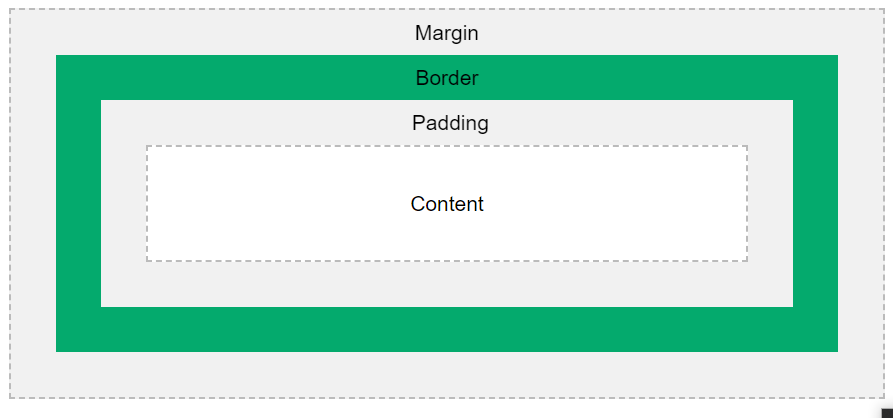

Modelo de caixa CSS

This text is the content of the box. We have added a 50px padding, 20px margin and a 15px green border. Ut enim ad minim veniam, quis nostrud exercitation ullamco laboris nisi ut aliquip ex ea commodo consequat. Duis aute irure dolor in reprehenderit in voluptate velit esse cillum dolore eu fugiat nulla pariatur. Excepteur sint occaecat cupidatat non proident, sunt in culpa qui officia deserunt mollit anim id est laborum.
CSS Outline
The outline-style Property
A dotted outline
A dashed outline
A solid outline
A double outline
A groove outline. The effect depends on the outline-color value.
A ridge outline. The effect depends on the outline-color value.
An inset outline. The effect depends on the outline-color value.
An outset outline. The effect depends on the outline-color value.
The outline-width Property
A thin outline.
A medium outline.
A thick outline.
A 4px thick outline.
Deslocamento de contorno CSS
This paragraph has an outline of 15px outside the border edge.